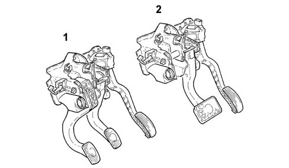

3330B pedal unit
- Path
- Descriptions > 33 BRAKING SYSTEM > 3330 HYDRAULIC BRAKING SYSTEM > 3330B pedal unit
- Kind
- system description
- Applies to
- engines: 1.6 TS, 2.0 TS; all production periods
- Interactive page
- https://sloeber94.github.io/elrnDB-a147/en/#/3022480
Applies to: engines: 1.6 TS, 2.0 TS; all production periods
CONSTRUCTION FEATURES
All cars are fitted with a pedal unit separate from the power unit. This consists of a mount with clutch and accelerator pedals in plastic and the brake pedal in steel as usual. This solution makes it possible to fit an oversized 10' brake servo and achieve a significant weight reduction.
The pedal unit has a ratio between the brake pedal travel and the sliding of the master cylinder piston which ensures that the brake servo characteristics are utilised to the full. Braking is also smoother and more gradual.
Pedal arrangement has been optimised to make the pedals more user-friendly by considering ideal ankle angle and pedal spacing parameters. On the 2.0 Selespeed version, the pedal unit does not include a clutch release pedal because this function is taken over by the hydraulic control unit governed by the Selespeed ECU 2127A hydraulic transmission external linkage.
The accelerator pedal is fitted with two built-in potentiometers (a main one and a safety back-up). These send pedal movements to the control unit, which opens the throttle by the required amount 1056 PETROL INJECTION SYSTEM.

1 - Pedal unit for versions without Selespeed 1.6 T. SPARK 2 - Pedal unit for versions with Selespeed 2.0 T. SPARK Selespeed